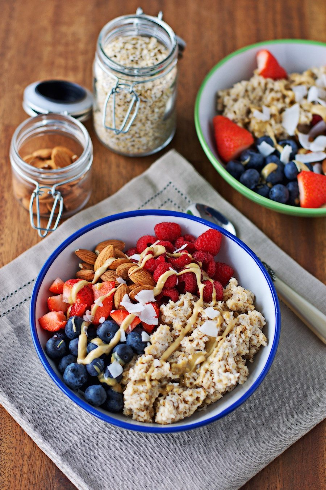
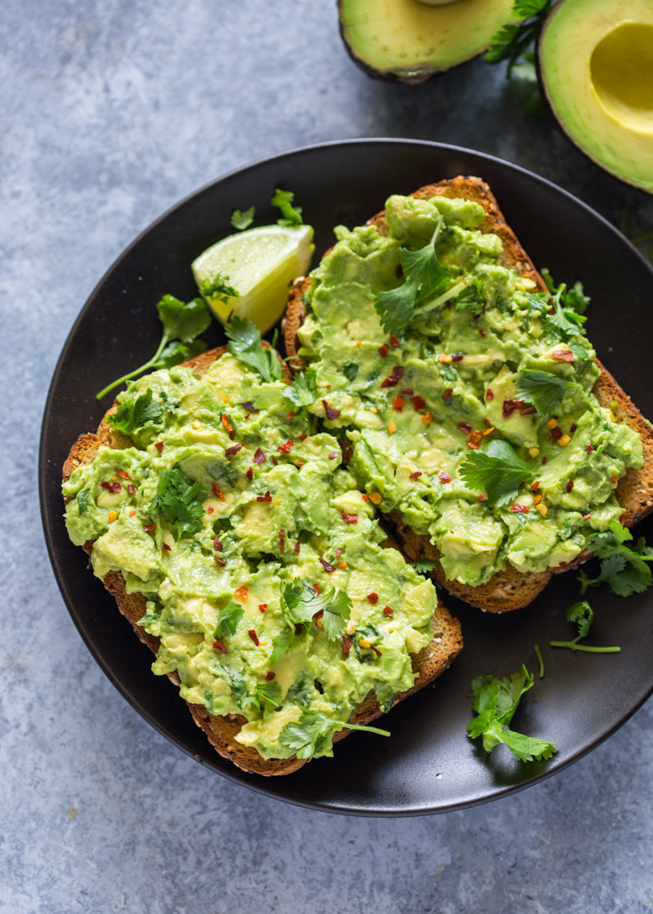
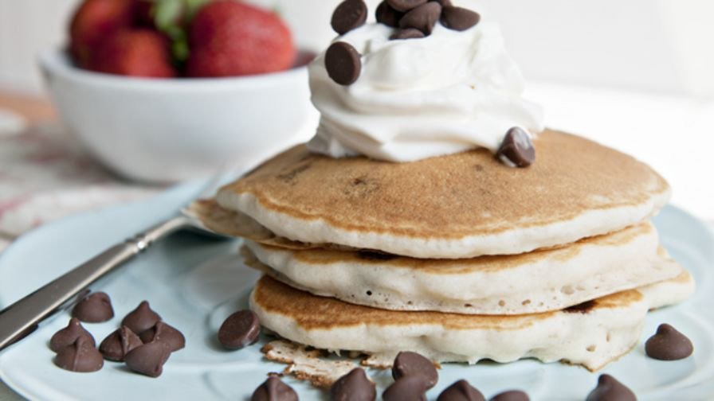
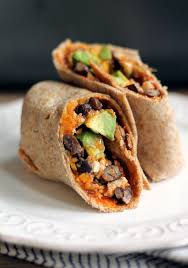

Breakfast Bowl
Simple,easy, and quick breakfast that can be made in 10 minutes or so. It's also very versatile.

Ingredients
- 1 cup of oats
- 14 oz of almond milk or milk of choice
- 1 cup blueberries
- 1 cup strawberries
- 1 cup almonds
- 1-2 Tbs nut butter of choice
- 1-2 Tbs maple syrup
click for more details
Avocado Toast
Another quick and easy recipe to make when you have a bit of time. It takes about 7 minutes.

Ingredients
- 1 avocado
- 1 slice of bread
- 1 beaten egg
- salt and pepper
- juice of 1/2 a lime
click for more details
Chocolate chip pancakes

Ingredients
Sweet Potato and Black Bean Burritos

Ingredients
- eggs,
- black beans
- sweet potato
- omelet
click on watch how to make sweet potato and black bean burritos